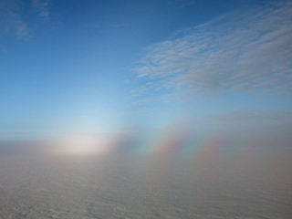

| |<< |< August 8, 2005 >| >>| | |
|
Our final day of work here at Summit. Seeing how things went so well yesterday with the long course, we decided that we could best develop and demonstrate the long-distance reliability of the robot by simply having it run the course again. So, just after lunch, we sent the robot on its way, after first escorting it past a few Summit buildings and out to the Skiway. It took off just as before, under blue skies with scattered high-altitude clouds - plenty of solar power available. The four working panels of the robot were successfully supplying the necessary power as the robot made its way northeast. What then did Jim and I do, while the robot was making its way, mile after mile, along the course laid out for it? Well, today happened to be our day for handling various house duties, such as washing the dishes, vacuuming the Big House floor, cleaning the bathroom, etc. Not glamorous work, certainly, but necessary for the camp to function. Besides, what else would we do? Well, Jim began pouring over the data from Sunday's run: 10-second averages of about two dozen parameters of interest over the course of 6 hours. We also have 1 second data for all of those values, but it becomes impossible to really make sense of so many dots on a graph. Even in a pure binary format as a data file, that still works out to something like a megabyte of data per hour. Thankfully, we equipped our datalogger (a Campbell Scientific CR1000 - a very sweet unit) with a 1 GB flash card for storage. And so time wore away. Occassionally, one of us would grab a pair of binoculars and scan the horizon for a moving black rectangle - our robot making its way slowly but surely. To get a sense of how indistinct it could appear, observe the short video at the end of this post. After dinner, we expected the robot to have reached its final waypoint, having completed its course. In an effort to really test the endurance of the system, we had altered the code so that it would loop back to the beginning and perform the circuit again, and again, and again, until we told it to stop. So long as the sun continued to shine, we felt, the robot should be able to continue driving overnight. But, of course, from about 9 pm to 3 am, the amount of sunlight available at this time of the year is barely enough for solar power system to keep the electronics running (some 15 W), let alone power the motors to keep making headway (another 150-200 W), without pulling power from the batteries. So, we instructed the robot to stop for a while if the battery voltage dropped too low - ostensibly so that the batteries could recharge. However, with the lack of usable sunlight around midnight, this tactic was more to wait things out until the sun re-emerged. Around 8 pm, I scanned the Skiway, trying to find our intrepid robot. But, a fog has rolled in, and the glare from the sun made it difficult to even see the flags that mark the Skiway. So, I donned skis and set out to find the robot on foot, so to speak. After some searching around where I expected it to be, I did run into its tracks. However, the tracks were heading south, beyond the final waypoint, and not to the northeast, as it should have done if it were actually looping back to the beginning. Thankfully, I caught up with the robot after only about a half mile. It was, as instructed, sitting and trying to recharge its batteries, but the fog and late hour made this impossible for the robot. Unwilling to risk having it sit out for another six hours or so before resuming its erroneous track, Jim and I brought it back to camp with a snowmobile. Ok, so there were two slight shortfalls with this, our last test. The first is that the robot got confused when it was supposed to loop back to the beginning of its course. It had followed it course through the four waypoints quite well up to that point. So, there was some problem with the software that we haven't yet worked out. The second problem, which was out of our control, was the fact that the sun went away, leaving the robot to slowly but surely drain its batteries. It probably had enough energy stored in them to hang out for a few hours until there was more sun available, but Jim and I felt it best to bring it home. After all, we need to pack it away tomorrow. In tomorrow's post, since it will be a very slow day as far as the science is concerned, I'll try to summarize what we have accomplished these last two weeks (really, two years), what's the big deal about it, anyway?. --Alex Streeter |
|
 |
 |
| A brief video to give you a sense of just how far out the robot would be during these trips. Zoom in, zoom out. | Multiple rainbows caused by the evening sun, a blanket of fog over the snow surface, and a polarizing filter on my camera. [Full Size] |
| |<< |< August 8, 2005 >| >>| | |
{kind=link}
| [Main] | [Mission] | [Design] | [Science] | [Papers] | [Pictures] | [Team] |
|
Last Updated on 10/20/2005 by Streeter
Site © Thayer School of Engineering, Dartmouth College, Hanover, N.H. |